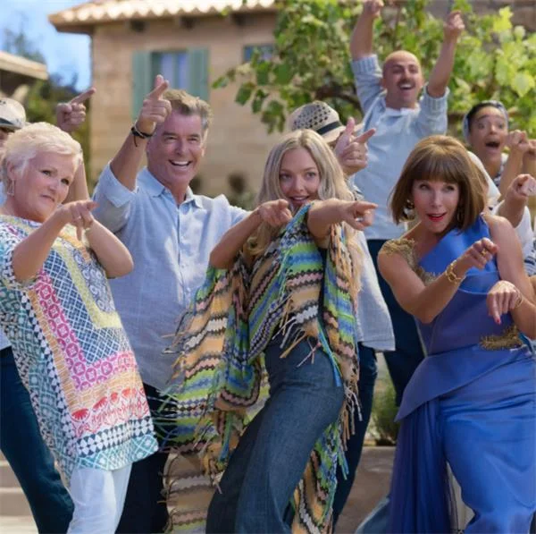
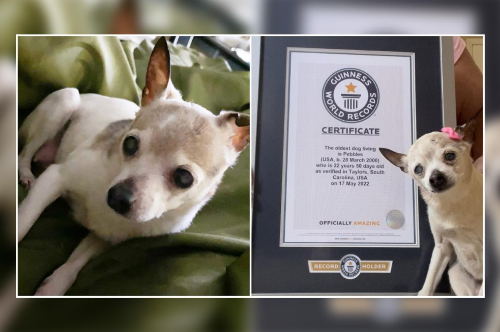
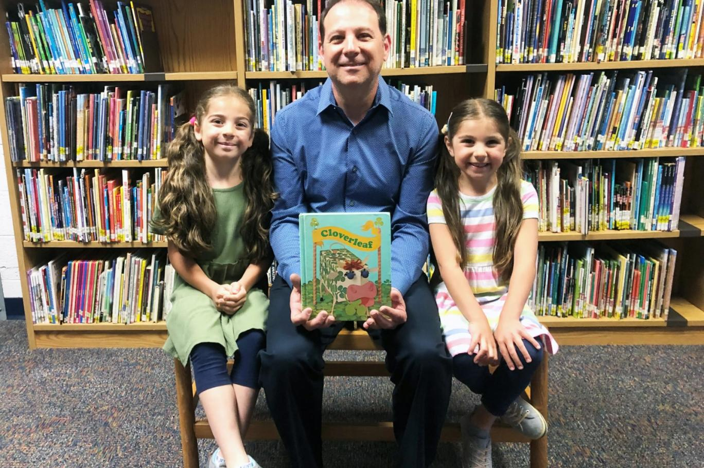

Neler oldu?
YAŞAM HABERLERİ
1 / 6
![Sırf siyah beyaz olduğu için göz ardı edilebilecek, 1957 tarihli bu nefis filmi genel olarak hatırlayalım ve izleme listelerine ivedilikle ekleyelim. Sweet smell of success... hırslı gazetecilerin yozlaşmış dünyalarına göz atan bir başka kara anlatı. filmde ferah, lüks bir dairede yaşayan nüfuzlu gazeteci, tv şovu sunucusu j.j. hunsecker (burt lancaster), emrindeki köşe yazarı ajanı sidney falco’yu (tony curtis) savunmasız küçük insanları ezmek için görevlendirir. iftirayla örülü, çıkar ilişkileri ve şantajdan kurulu, kirli hesapların dünyasında köşe yazarlarının yozlaşmışlığı, seks düşkünlüğü, ahlaksız kirli polislerin nüfuzlu kişilerin emrine girdikleri kasvetli, karanlık bir atmosfer büyüteç altına alınır.](img/Film.jpg)
Büyük Kısmı Gece Çekilen ve Az Bilinen, Nefis Bir Film Noir: Sweet Smell of Success!
2 / 6

Yaz Stilinize İlham Verebilecek 5 Film!
3 / 6
![Üç adet sütun ve bir tanesine geçirilmiş 'n' adet diskle oynanan bir puzzle olarak özetleyebileceğimiz bir problem Hanoi kuleleri. Nedir bu problem? Hanoi kuleleri, fransız matematikçi edouard lucas tarafından 1883 yılında icat edilmiş bir problem. Bir çubuğa geçirilmiş 8 adet diskin diğer bir kuleye geçirilmesi esasına dayanır bu problem. söz konusu 8 disk, büyükten küçüğe doğru üst üste birinci kuleye dizilmişlerdir. boş olan iki kule kullanılarak (yani toplamda 3 kulemiz var) en sağdaki boş kuleye bütün diskleri sıralı olarak transfer etmemiz istenir. aynı anda sadece bir diski bir kuleden diğerine geçirebiliriz ve bu disk en üstte duran disk olmalıdır. transfer edilen disk, başka bir diskin üzerine konulabilir, ancak altta kalan diskin her zaman üstteki disklerden büyük olması zorunludur.](img/FransızMat.jpg)
Fransız Bir Matematikçinin 1883'te İcat Ettiği Problem: Hanoi Kuleleri!
4 / 6
![Johnny Depp ile eski eşi Amber Heard arasındaki davada sona gelindi ve mahkemenin kararı açıklandı. Jüri, ünlü oyuncu Johnny Depp'i haklı bularak Amber Heard'in yazdığı makalenin ünlü oyuncuyı karalama niteliği taşıdığına karar verdi. Jüri, Heard'in evlilikleriyle ilgili iddialarının yanlış' olduğunu belirterek Depp dışındaki insanlara da iftira niteliğinde olduğunu belirtti. Aynı zamanda Heard'in hareketlerinin 'kötü niyet' taşıdığını aktardı. Jüri ayrıca makaleden ötürü gördüğü zararın karşılanması için Depp'e 15 milyon dolar tazminat ödenmesine karar verdi.](img/DeepAmber.jpg)
Johnny Depp, Amber Heard'e karşı açtığı karalama davasını kazandı!
5 / 6
Saçların çabuk yağlanmasının nedenleri nelerdir?
6 / 6
![Galatlar, MÖ 3. yüzyılda Orta Anadolu'da Ankara, Çorum, Yozgat civarına yerleşen Avrupa kökenli Kelt kavmine mensup Galyalılara verilen isim. O civarlara 250 yıl boyunca hakim olan bu kavmi tanıyalım. Galatlar, yüzyıllarca orta anadolu'nun galatya denen bölgesini (ankara, çorum yozgat civarı) bağımsız veya roma hükmü altında yönetmiş kelt kavmi. Şimdi bu keltlerin anadolu'ya gelişnin roma'nın galya'yı yani günümüz fransasını fethetmesiyle hiçbir ilgisi yok. bu tarihlerde roma henüz alplerin ötesine dahi hükmedemiyor. olaylar keltler'in kafalarına esip milattan önce 3. yüzyılda brennus önderliğinde balkanlara göç etmesiyle başlıyor. 281 yılında yunanistan'ı işgal ediyorlar ancak delfi tapınağı'nı yağmalayamadan geri püskürtülüyorlar. bu sefer de makedonya'ya dadanıp makedon kralı ptolemy ceraunus'u öldürüyorlar. ancak iskender'in 12 büyük komutanından tek 1. antigonus soter'in torunu olan 2. antigonus gonatas bu işgalcileri alt edip zamanla makedonya'ya hakim oluyor.](img/AvrupaGocYozgat.jpg)
MÖ 3. Yüzyılda Avrupa'dan Göçüp Yozgat'ta Karar Kılan Kavim: Galatlar!
![Kendini bulmayı amaçladığı bu yolculuk için Hollanda Ulusal Etnoloji Müzesi ile görüştü ve o zaman Hollanda Yeni Gine olarak bilinen Yeni Gine’ye bir ziyaret planladı. Orada yaşayan Asmat halkının sanatını toplamak asıl hedefiydi. Asmat insanları, o zamana dek neredeyse hiç beyaz bir insan görmemişlerdi. Dış dünyayla sınırlı temasa sahip olan bu halk, beyaz insanları denizin ötesinden gelen doğaüstü varlıklar olarak görüyordu. Yaklaşık 70 bin kişilik nüfusa sahip olan kabile, nehir kıyıları boyunca konumlanmış küçük köylerde yaşıyordu. Kafa avcılığı ve yamyamlık, 1990’lı yıllara dek Asmat kültürünün temel öğelerindendi. Zira Asmatlar için ölümlerin öcünü almanın tek yolu kafa kesmekti. Kişinin hastalıktan ölmesi bile bunu inanışı değiştirmiyordu. Michael, babasının müzesi için kabile sanatı toplamak üzere 1961 yılında Yeni Gine’ye gitti.](img/RockefellerYamyam.jpg)
Rockefeller Ailesinin Varisiydi: Yamyam Bir Kabileyi Ziyaret Ettikten Sonra Ortadan Kaybolan Michael Rockefeller!

Yaşayan en yaşlı köpek unvanı bir ay sonra el değiştirdi!
![✔️ Sabah uyanınca bir bardak kaynayıp dinlenmiş su iç. ✔️ Gün içinde bol su iç ve suyuna limon ekle. ✔️ Akşam yemeğini erken ye. ✔️ Yavaş ye, çok çiğne. ✔️ Yemeklerin yanında içecek tüketme, içecek ve yemek arasında yaklaşık bir saatlik süreler olsun. ✔️ Gün içinde yoğurt, kefir veya turşu tüket. ✔️ Her gece hafifçe ezilmiş 1 diş sarımsak yut. ✔️ Doğal bal, zeytinyağı ve tereyağı kullan. ✔️ Mevsiminde bol meyve ve sebze tüket. ✔️ Meyveleri gün içinde, erken saatlerde ye. ✔️ Sebzeleri mümkün olduğunca pişirmeden ya da suyunu sıkarak tüket. ✔️ Etin yanında mutlaka salata da ye. ✔️ Gün içinde çiğ kuruyemiş atıştır, yeşil çay veya bitki çayı iç. ✔️ Beslenmene baklagilleri ve çeşitli tohumları da ekle. 🚫 Gluten içeren tüm gıdaları; un, ekmek, pilav, makarna ve hamur işini azalt. 🚫 Şeker ve şekerli gıdaları azalt. 🚫 İnek sütü yerine bitkisel süt kullan. 🚫 Yapay gıdalardan uzak dur.](img/SaglikliBeslenme.jpg)
Sağlıklı Beslenme İçin Pratik Adımlar!

İlkokuldayken kütüphaneden aldığı kitabı 40 yıl sonra iade etti!
![Japonya'da en sevdiği köpek cinsi gibi görünmek isteyen adam, gerçekçi bir border collie kostümü için 2 milyon yen (yaklaşık 260 bin TL) harcadı. İsmi sadece Toko olarak verilen adam, kostümü yapması için filmlere ve reklamlara heykel ve model üretmesiyle bilinen Zeppet adlı Japon şirketiyle anlaştı. Zeppet'in kostümü yapmasının 40 gün sürdüğü, kostümün tam olması için Toko'nun çok sayıda prova aldığı ve kostümün birçok kez revizyondan geçtiği belirtildi. Toko, Japon medya kuruluşu Mynavi'ye verdiği röportajda 'Collie cinsini seçtim çünkü kostümü giyince gerçekçi duruyor' dedi.](img/KopekGibiGorunmekIcın260binTLHarcadi.jpg)
Japonya'da bir adam köpek gibi görünmek için 260 bin TL harcadı!
![Netflix tarafından gelecek en pahalı film olarak geçen The Gray Man için ilk resmi fragman paylaşıldı. İddialı bir aksiyon filmi kapıda. Tam 200 milyon dolarlık yapım maliyeti ile dikkat çeken The Gray Man, bu açıdan büyük beklentilerin merkezinde bulunuyor. İlk resmi fragmanını yukarıda izleyebileceğiniz film, şimdilik oluşan büyük beklentiyi çok fazla karşılayabilecek gibi görünmüyor ancak yine de dikkat çekiyor. Chris Evans’ın bıyığı ile de öne çıkan film için Netflix Türkiye şunu açıklıyor: “Yönetmenliğini Anthony Russo ve Joe Russo’nun üstlendiği, Netflix/AGBO ortak yapımı olan bu casus geriliminde THE GRAY MAN’i Ryan Gosling, onun psikopat düşmanını ise Chris Evans canlandırıyor. Tüm dünyada, 22 Temmuz’da, Netflix’te. Ana de Armas, Regé-Jean Page, Billy Bob Thornton, Jessica Henwick, Dhanush, Wagner Moura ve Alfre Woodard’ın da rol aldığı ve Mark Greaney’nin aynı adlı romanından uyarlanan filmin senaryosu Joe Russo, Christopher Markus ve Stephen McFeely’nin imzasını taşıyor.](img/en-pahali-film-the-gray-man.jpg)
Netflix tarafından gelecek en pahalı film: The Gray Man!
×